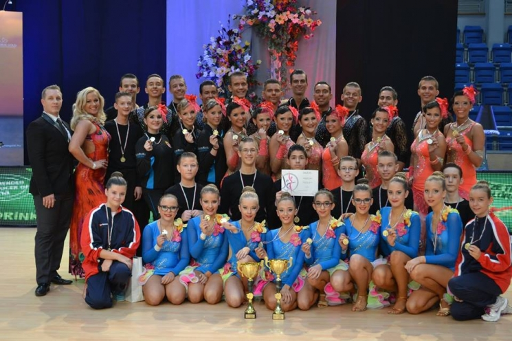
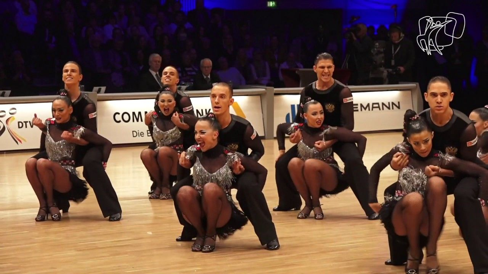

Videók
A következő videók a formációs táncok szépségét mutatják be ráadásul olyan magas szinten mellyel már a Világbajnokságra lehet kvalifikációt szerezni.2015-ben magam is részt vettem a bécsi VB-n mely szerencsére meg is lett örökítve.A második videó pedig a világ legrangosabb formációs produkciója,melyet az orosz Duet Perm csapata készített. Ez a csapat nyeri szinte minden évben a Világbajnokságot.
| Bécs,2015  |
| Duet Perm  |